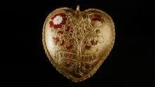
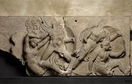
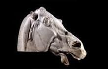
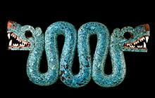
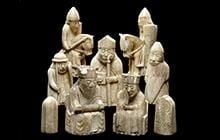
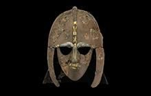
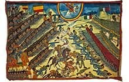
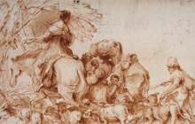
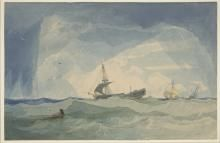

地下层

非洲
第25展厅 (塞恩斯伯里展厅)
底层

启蒙运动
第1展厅

收藏世界
第2展厅
沃德斯登遗赠
第2a展厅 （由罗斯柴尔德基金会资助）

埃及雕塑
第4展厅

亚述雕塑与巴拉瓦特城门
第6a展厅

亚述：尼姆鲁德
第7–8展厅

亚述：尼尼微
第9展厅

亚述：猎狮、拉吉之围与豪尔萨巴德
第10展厅

希腊：米诺斯人与迈锡尼人
第12展厅 (阿瑟·I·弗莱施曼展厅)

希腊，公元前1050–前520年
第13展厅

希腊陶瓶
第14展厅

雅典与吕基亚
第15展厅

希腊：巴赛雕塑
第16展厅

涅瑞伊得斯纪念碑
第17展厅

希腊：帕特农神庙
第18展厅

希腊：雅典
第19展厅

希腊人与吕基亚人，公元前400–前325年
第20展厅

哈利卡纳苏斯的摩索拉斯王陵墓
第21展厅

亚历山大的世界
第22展厅

希腊与罗马雕塑
第23展厅

生与死
第24展厅 (惠康基金会展厅)

北美洲
第26展厅

墨西哥
第27展厅

大中庭
大中庭

东侧楼梯
东侧楼梯
楼上各层

中国与南亚
第33展厅 (何鸿卿爵士展厅)

印度：阿马拉瓦蒂
第33a展厅 (朝日新闻展厅)

中国玉器
第33b展厅 (塞尔温与埃莉·阿莱恩展厅)

钟表
第38–39展厅 (哈里·贾诺格利爵士与夫人展厅)

中世纪欧洲，1050–1500年
第40展厅 (保罗·拉多克爵士与夫人展厅)

萨顿胡与欧洲，公元300–1100年
第41展厅 (保罗·拉多克爵士与夫人展厅)

伊斯兰世界
第42–43展厅 (阿尔布哈里基金会展厅)

欧洲，1400–1800年
第46展厅

欧洲，1800–1900年
第47展厅

欧洲，1900年至今
第48展厅

罗马时期的不列颠
第49展厅 (韦斯顿展厅)

不列颠与欧洲，公元前800年–公元43年
第50展厅

欧洲与中东，公元前10000–前800年
第51展厅 (谢赫·扎耶德·本·苏尔坦·阿勒纳哈扬展厅)

古代伊朗
第52展厅 (拉希姆·伊尔瓦尼展厅)

古代南阿拉伯
第53展厅

安纳托利亚与乌拉尔图，公元前7000–前300年
第54展厅

美索不达米亚，公元前1500–前539年
第55展厅

美索不达米亚，公元前6000–前1500年
第56展厅

古代黎凡特
第57–59展厅

埃及的生与死：内巴蒙墓室礼拜堂
第61展厅 (迈克尔·科恩展厅)

埃及的死亡与来世：木乃伊
第62–63展厅 (罗克西·沃克展厅)

早期埃及
第64展厅

苏丹、埃及与努比亚
第65展厅

埃塞俄比亚与科普特埃及
第66展厅
. Korea, 220x140.jpg)
韩国
第67展厅 （韩国国际交流财团展厅）

货币
第68展厅

希腊与罗马人的生活
第69展厅

罗马帝国
第70展厅 (沃尔夫森展厅)

伊特鲁里亚世界
第71展厅

古代塞浦路斯
第72展厅 (A.G.莱文蒂斯展厅)

意大利的希腊人
第73展厅

版画与素描展
第90和90a展厅

日本
第92–94展厅 (三菱商事日本展厅)

中国陶瓷——大维德爵士收藏
第95展厅 (何鸿卿爵士陶瓷研究中心)
虚拟展厅

大洋洲
虚拟展厅

版画与素描
虚拟展厅